Expand all Collapse all Leave Inalla in the command zone. Her Eminence ability supplies the copies used by every main engine and two of the combo packages, so this deck can win without ever casting its commander. Copying costs one mana each time; preserve that mana instead of spending everything on the Wizard. Author: zzwang. This is Bracket 3 with three Game Changers, and its combos are for turn 6 and later. Your commander works from the command zone 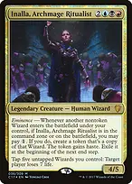Inalla, Archmage RitualistWhenever another NONTOKEN Wizard enters under your control, Eminence offers one hasty token copy for one mana. Reanimation triggers it as well as casting a Wizard, but the token itself does not trigger another copy. The copy is exiled at the next end step. Only Eminence works from the command zone: the tap-five-Wizards drain ability requires Inalla on the battlefield and is not needed for any finish described here. Aether ChannelerFour mana including the Eminence payment gives two entry triggers: draw twice, bounce two nonland permanents, make flying blockers, or mix modes. Reanimation and Riptide Laboratory let you reuse the original. A token created during your main phase disappears at your end step, so do not count that copy as a blocker for the whole round. 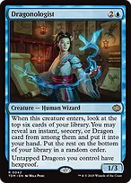DragonologistAnother four-mana play with Eminence: look at six cards, take a qualifying spell, then do it again with the copy. This digs for rituals, reanimation, protection, or a tutor. The deck has no Dragons, so its Dragon protection is not the reason to include it. ArchaeomancerWith a one-mana copy payment, recover two different instants or sorceries. Return removal to survive, or rebuild a disrupted combo. Choose targets carefully: if both triggers target the same graveyard card, the second cannot retrieve it after the first has moved it. Snapcaster MageFlash lets you deploy it on another player's turn and copy it for one. Give two graveyard spells flashback, but you must still pay their costs and follow timing rules. Flashback exiles those spells afterward, so avoid using an irreplaceable combo piece this way before you need to loop it. 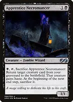Apprentice NecromancerIts Eminence copy has haste and can immediately pay black, tap, and sacrifice itself to reanimate a creature. The original normally waits a turn. Returning a nontoken Wizard creates another Eminence opportunity. Reanimated creatures are temporary unless you sacrifice or otherwise move them before the delayed end-step sacrifice. Azami, Lady of ScrollsTurns spare Wizards into cards, including newly entered Wizards, because the cost says to tap an untapped Wizard rather than using that Wizard's own tap-symbol ability. Usually decline Inalla's offer to copy Azami: she is legendary, so you cannot keep both or activate the copy before the legend rule applies. 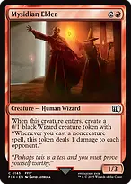Mysidian ElderPaying for the Elder copy creates TWO separate 0/1 Wizard tokens with a spell-cast damage ability. These offspring are not the temporary Eminence copies and remain after the copied Elder is exiled. They give Patron Wizard and Azami more bodies, and the repeated spell casts in the Scholar loop can burn every opponent. Merely copying a spell is not casting it. Make mana before paying for copies Arcane SignetTen reusable mana rocks cost one or two mana: Sol Ring, Arcane Signet, Fellwar Stone, the three Talismans, the three Signets, and Mind Stone. The deck has 35 lands plus Sink into Stupor and Malakir Rebirth as two optional land plays. Ramp is independent of whether Inalla has ever been cast. Sol RingPays generic Wizard costs and Eminence payments efficiently. The demanding colors still need real sources: the starter Spellseeker line needs blue and black, Patron Wizard needs three blue, and Dualcaster plus Twinflame needs three red. Do not treat two colorless mana as fixing those costs. Dimir SignetRequires one input mana to produce blue and black. Izzet Signet and Rakdos Signet have the same input requirement with their respective colors. Keep this in mind when planning to cast a Wizard and pay one for its copy in the same turn. Lotus PetalOne-shot mana of any color can supply a missing black ritual payment or red for the backup combo. It is additional acceleration, not one of the ten reusable rocks. Dark Ritual similarly provides a burst of black, while Burnt Offering and Culling the Weak require a creature to sacrifice. Cavern of SoulsUsually name Wizard. Its colored mana helps cast Wizards without being countered, but cannot pay for your instants or sorceries. Its ordinary colorless ability can pay an Eminence cost. Fetches can find the original duals and shocklands to supply unrestricted colored mana for combo spells. Riptide LaboratoryReturn a valuable Wizard to your hand to save it from removal or repeat its entry ability. It only makes colorless mana, so keep enough other blue sources. Returning an Eminence token does not preserve it as a card: it ceases to exist after leaving the battlefield. Find a winning line or recover value SpellseekerThe main starter. In a fair game, one copy payment finds two small spells. With the support cards available, Spellseeker alone in hand plus two generic, one blue, and one black mana starts the advanced line below. That is a sequence involving many cards in the library, not an unconditional four-mana win through disruption. Step ThroughWizardcycling for two finds Spellseeker, Bloodline Necromancer, a defensive Wizard, or Scholar of the Ages. Cycling is an activated ability and cannot be stopped by a normal spell counter. It still searches the library and can be disrupted by effects that stop searches or counter abilities. Vedalken AethermageA second Wizard tutor through wizardcycling for three. Its creature mode is usually secondary; do not cast it expecting generic creature removal, because its entry ability specifically targets a Sliver. Imperial RecruiterFinds Spellseeker, Dualcaster Mage, Apprentice Necromancer, or other creatures whose power in the library is two or less. It is an Advisor, not a Wizard, so Inalla does not copy it. Bloodline Necromancer and Scholar of the Ages have three power and are outside its range. 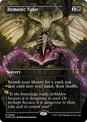Demonic TutorGAME CHANGER 1/3. Finds whichever card actually completes the position, including an answer to graveyard hate. Spellseeker can find this sorcery. Diabolic Intent supplies another unrestricted tutor when you can sacrifice a spare body, preferably a temporary copy that would soon be exiled. Wishclaw TalismanPay one and tap during your turn to find any card, then an opponent gains the Talisman. Use it when that tutor completes a protected win or answers an immediate threat. Handing over a live tutor several turns before you can act is a real downside. EntombPuts any card into your graveyard, usually a Wizard for Reanimate, Animate Dead, or Shallow Grave. Scholar of the Ages can turn an entombed instant or sorcery into a card in hand. Graveyard exile can break this plan, so remove that interference before committing the important creature. Faithless LootingPut a drawn Scholar into the graveyard where your reanimation can reach it, or exchange excess lands for action. It is card selection with a discard cost, not net card advantage on its own. A combo piece already in your hand or graveyard changes the exact route below; count mana before starting. Rhystic StudyGAME CHANGER 2/3. A source of cards that does not need Inalla or another creature in play. Mystic Remora is the cheaper early engine, but its cumulative upkeep grows each turn. These let you hold protection and keep playing when a single combo attempt is stopped. Win one — the four-mana Spellseeker route The clean route assumes Inalla remains in the command zone, Spellseeker is in hand, the named support cards are available in the library, you have more than seven life, and no opposing effect stops the searches, graveyard moves, entry triggers, or repeated casts. Begin in your main phase with two generic, one blue, and one black mana. Extra mana and protection make the attempt safer. Culling the WeakSTEP 1: cast Spellseeker for two generic and one blue, leaving black. Put its search trigger ABOVE the pending Eminence trigger and find Culling. Cast Culling using that black and sacrifice the real Spellseeker as the additional cost; its resolution gives four black. Then resolve Eminence, paying one to copy the departed Spellseeker, leaving three black. The token's entry trigger finds Unearth. Inalla can copy the Wizard using its last known characteristics after it has left. 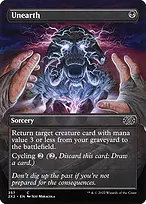UnearthSTEP 2: spend one black to return the real Spellseeker, leaving two black. Resolve its search and pay one for its new Eminence copy to obtain Burnt Offering and Finale of Promise; one black remains. The original and two Spellseeker tokens are now on the battlefield. You need to preserve a token for the next sacrifice. 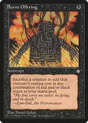Burnt OfferingSTEP 3: use the last black to cast Offering, sacrificing the REAL Spellseeker. Its mana value is three, so add one black and two red. Spend those three mana on Finale of Promise with X=1. Offering counts the sacrificed creature's mana value, including for a copied token; it does not use power or the mana actually paid to cast that creature. 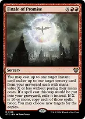Finale of PromiseSTEP 4: target Unearth and Culling the Weak in your graveyard. During Finale's resolution, cast Unearth first targeting the real Spellseeker, then cast Culling and sacrifice a Spellseeker TOKEN. Culling resolves first and adds four black; Unearth returns the original. Pay one for its Eminence copy and use the two searches to find Entomb and Reanimate, leaving three black. Culling and Unearth are exiled after resolving this time. Finale itself goes to the graveyard. ReanimateSTEP 5: spend one black on Entomb to put Scholar of the Ages into your graveyard, then another black on Reanimate to return it. Lose seven life and retain one black. Put Scholar's entry trigger ABOVE its Eminence trigger and return Burnt Offering and Entomb to hand. Do not resolve the pending copy before setting up the next graveyard cards. 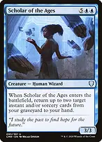Scholar of the AgesSTEP 6: cast Burnt Offering using your last black and sacrifice the real Scholar, generating seven black. Cast Entomb for Shallow Grave, leaving six black. Now resolve the pending Eminence trigger, paying one; the Scholar token returns Burnt Offering and Shallow Grave to your hand. You have five black, the real Scholar is the top creature card in your graveyard, and the repeatable loop is ready. 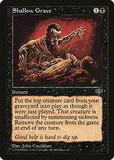Shallow GraveLOOP: pay two to return Scholar, keep its Eminence trigger pending, and resolve its ordinary entry trigger to recover any useful spells. Pay black for Burnt Offering, sacrifice Scholar, and generate seven mana in black/red. Pay one for Eminence; that hasty Scholar token retrieves Shallow Grave and Burnt Offering. Each cycle spends four mana and produces seven: net THREE mana plus one extra hasty Scholar token. Keep enough black to repeat, and generate red when needed. Shallow Grave does not target: it returns the TOP CREATURE CARD, so preserve graveyard order. 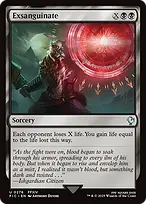ExsanguinateFINISH: repeat the loop a chosen large number of times. Use a Scholar entry trigger to recover Entomb, then entomb Exsanguinate. Another Scholar entry trigger returns Exsanguinate to hand. Finish resolving the stack and cast it for a lethal X with two black mana. This drains all opponents without targeting, combat, or casting Inalla. Each Scholar loop can also produce a hasty attacker; the spell finish avoids relying on attacks being available. Win two — the simpler Necromancer loop 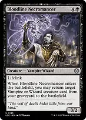Bloodline NecromancerHave Ashnod's Altar on the battlefield, then cast or reanimate Bloodline Necromancer. While its Eminence trigger is pending, sacrifice the REAL Necromancer to the Altar for two colorless. Pay one to resolve Eminence and make a hasty Necromancer token. The token's entry trigger targets and returns the real Necromancer from your graveyard, creating another Eminence trigger. Repeat the same sequence. Ashnod's AltarEach Necromancer iteration adds one colorless mana after paying for Eminence and leaves one additional hasty 3/2 lifelink token. Choose a sufficiently large number of iterations, then attack before the next end step if combat is available. With two black mana available, the colorless mana can also pay Exsanguinate's X. Necromancer simply sitting beside the Altar is not enough: you need its entry and Eminence trigger to begin the loop. Win three — a route that does not use the graveyard TwinflameIn your precombat main phase, target another creature you control with Twinflame, then respond by casting Dualcaster Mage. The initial creature target must exist; choosing zero targets does not allow the later copies to gain a target. The combined spells cost five mana including three red, and this route does not require an Eminence payment. Dualcaster MageIts entry trigger copies the pending Twinflame; change that copy's target to Dualcaster. The resulting hasty Dualcaster token copies the still-pending original Twinflame again. Repeat for as many hasty 2/2 Wizards as needed. To stop, aim the last copied Twinflame at the original non-Dualcaster creature. Resolve the stack and attack. Copies of Twinflame are not cast, so Mysidian Elder's offspring do not deal repeated spell-cast damage from this loop. Protect yourself and the attempt Patron WizardEvery untapped Wizard can tax a spell by one, including fresh Wizards and tokens. Multiple activations can make an important spell difficult to resolve, but the opponent can pay, and uncounterable spells remain uncounterable. Tapping your Wizards also spends potential blockers, so balance protection with the board you face. Glen Elendra ArchmageIts original body can sacrifice to counter a noncreature spell, then persist back with a -1/-1 counter. That nontoken return triggers Inalla again. With mana, both the original's two lives and temporary token copies provide counters. A token cannot return through persist after it dies. The original's second death normally cannot persist because it has the counter. Glen Elendra GuardianA 2026 flash Wizard: the original and its Eminence copy each enter with a -1/-1 counter and can spend one blue plus one generic and remove a counter to counter a noncreature spell. The opponent draws a card afterward. The copied counter is an entry replacement effect, not a counter copied from the original. If you cast it after the beginning of an opponent's end step, its temporary copy can last through your next turn until that turn's end step. 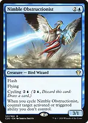Nimble ObstructionistCycle it for two generic and one blue to draw a card and counter an activated or triggered ability you do not control, such as an ability trying to exile your combo creature from the graveyard. Cycling is not casting a spell and does not trigger Inalla. Alternatively, cast this flash Wizard for a flying body and optionally an Eminence copy. The token cannot be cycled from the battlefield. 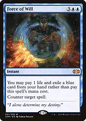Force of WillGAME CHANGER 3/3. Protect a combo on YOUR turn by paying one life and exiling a blue card instead of the normal mana cost. Inalla can stay in the command zone. Force of Negation supplies another alternative-cost answer on an OPPONENT'S turn, but its alternate cost does not work during your own combo turn. Pact of NegationProtects an attempt without spending mana now, but if you reach your next upkeep you must pay three generic and two blue or lose. A stopped combo does not cancel this debt. Do not cast it casually in a hand that cannot pay for the following turn. Hexing SquelcherYour spells cannot be countered while it stays in play, and your other creatures gain ward requiring two life. It is a Sorcerer, not a Wizard, so Inalla does not copy it. Opponents can still exile spells, remove combo creatures, interfere with the graveyard, or counter abilities; resolve it before a combo when its protection is useful. Flame of AnorWith a Wizard on the battlefield as you cast it, choose two modes to draw cards and remove an artifact or creature. Inalla sitting in the command zone does NOT satisfy the Wizard condition. It is a flexible answer to permanents that would otherwise stop entry abilities or graveyard access. Feed the SwarmThe black answer to an opposing enchantment that shuts off your graveyard or repeated casts. It costs life equal to that permanent's mana value. Chain of Vapor and Otawara can temporarily remove troublesome nonland permanents when you can win before they return. 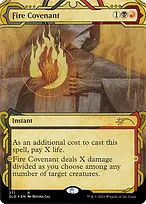Fire CovenantInstant-speed removal that divides damage among opposing creatures while preserving your own Wizards. Pay life for the damage and decide whether that still leaves enough life for Reanimate. Toxic Deluge is the broader reset and can handle indestructible creatures with sufficiently large toughness reduction, but it shrinks your board too. PropagandaDiscourages opponents from sending their armies at you while you hold up interaction. Crawlspace limits declared attackers at you to two. Neither guarantees safety against a large attacker or creatures entering already attacking, and these defenses do not interfere with your own combo casts. Malakir Rebirth // Malakir MireSave an important nontoken Wizard from destruction or deliberately sacrifice it after this resolves to reuse its entry trigger. You lose two life and it returns tapped, but the entry and Eminence abilities still happen. It does not bring back a token that has ceased to exist or a creature sent directly to exile. When mana is the problem, play the tapped black land face instead. What to keep and what to do first Keep about three usable lands, access to blue and black, and a cheap mana rock or a concrete route to Spellseeker. A strong hand also has protection or an early draw engine. A two-land hand needs credible acceleration or draw; a hand of expensive Wizards and no early play is a mulligan. Avoid a hand that can cast the Wizard but cannot pay for the copy or the next spell. SpellseekerDevelop mana, then decide whether this is a value turn or a protected combo turn. You do not have to start the long line every time you cast it: finding an answer and a reanimation spell can be stronger. Practice the full sequence with the cards laid out before relying on it in a game. Inalla, Archmage RitualistKeep her in the command zone while spending mana on useful Wizards, copies, and interaction. Stop and answer effects that block creature-entry triggers, exile graveyards, prevent searches, or limit casts before committing to the Spellseeker line. The Twinflame route avoids graveyard dependence. Your three Game Changers are Demonic Tutor, Force of Will, and Rhystic Study; there are no extra-turn chains or mass land-denial cards.